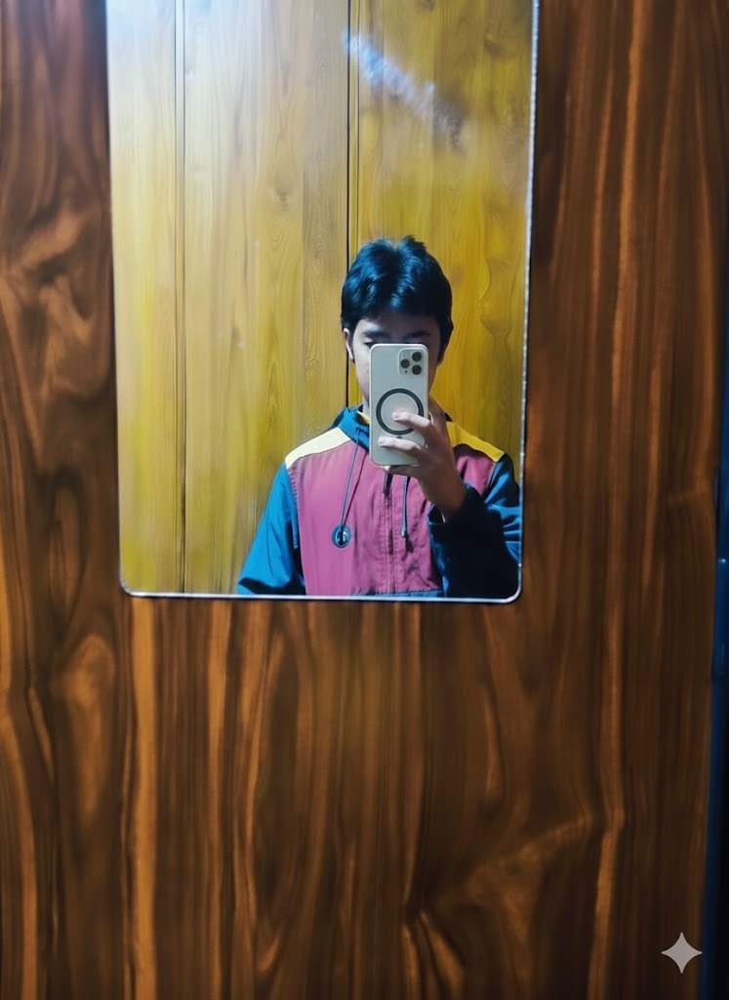
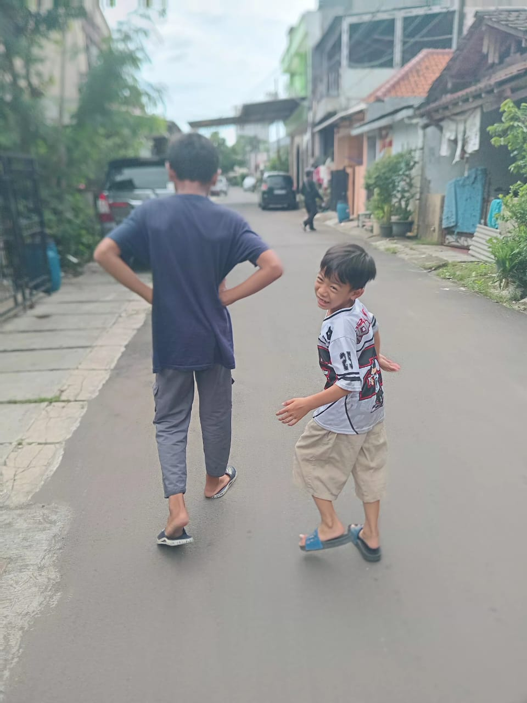
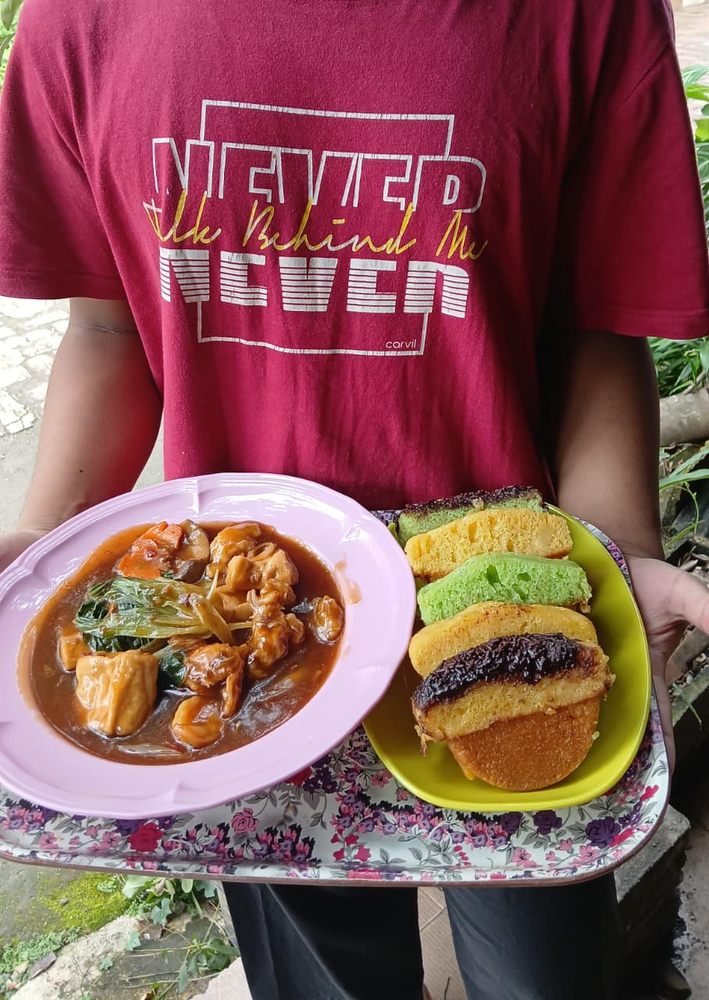
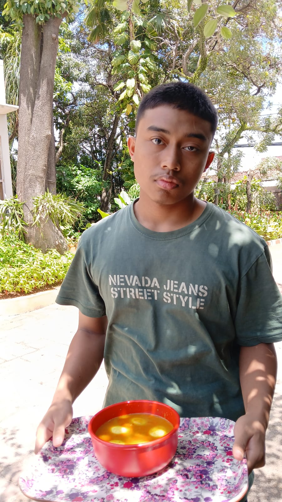
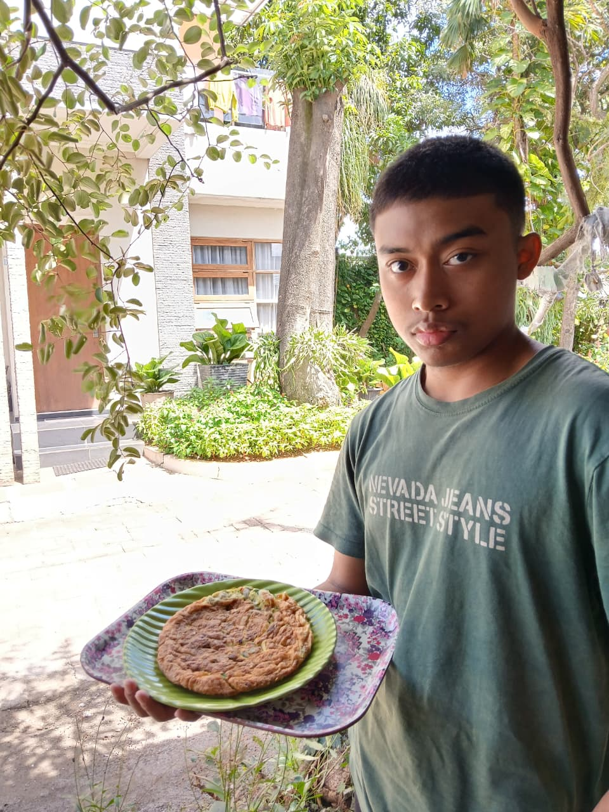
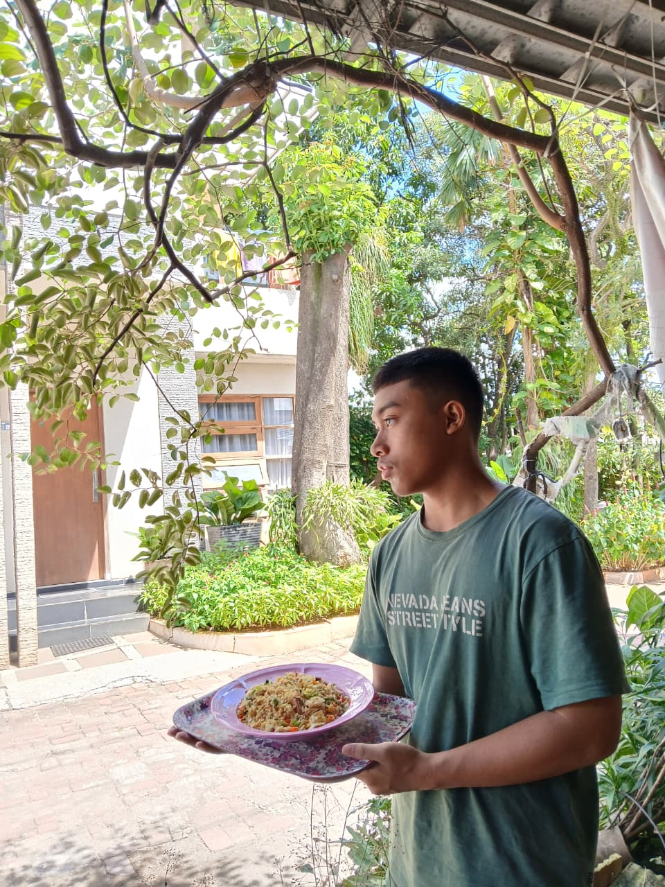
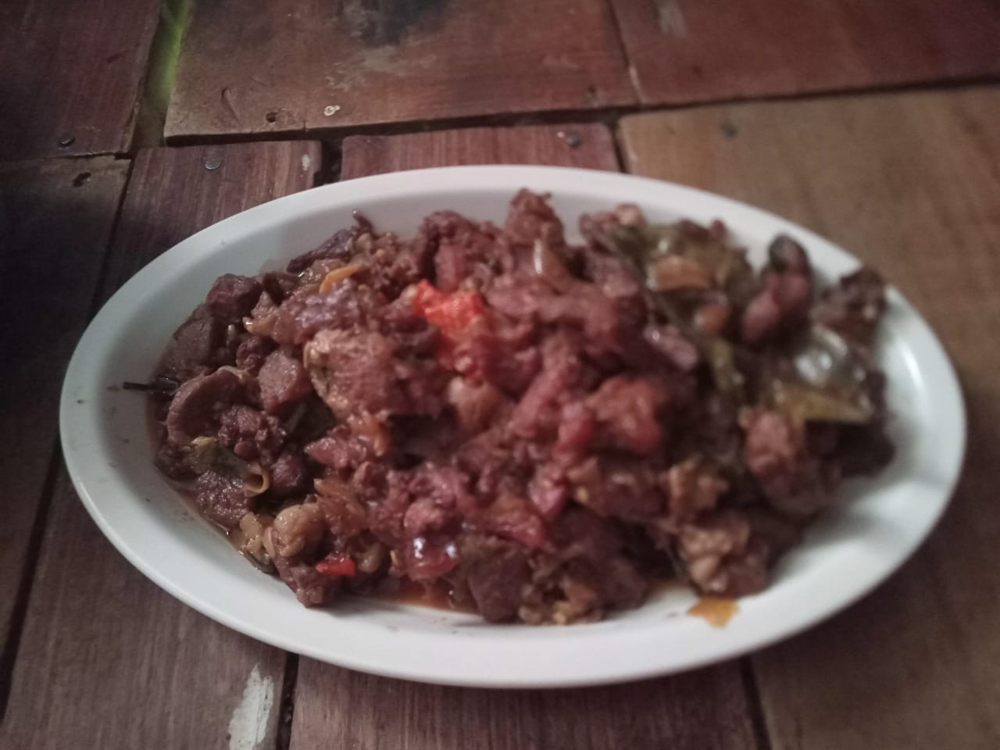
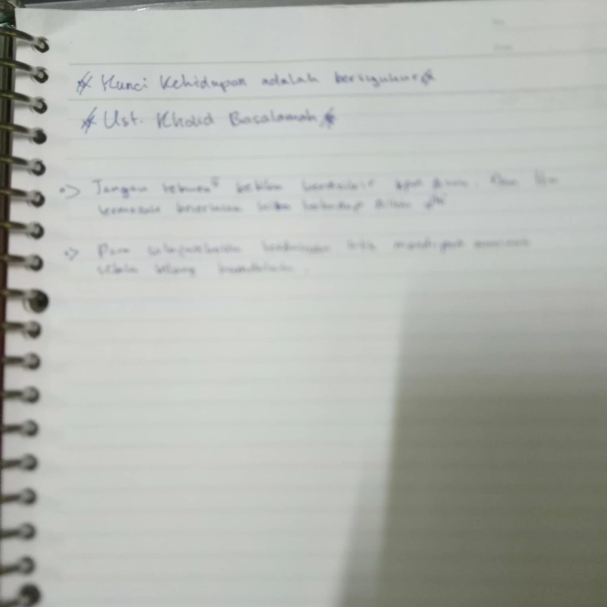

Website Portofolio
Oleh IMU ABDURROOFI
Web Developer | Content Creator | Student

ABOUT ME
Hi everyone!
Perkenalkan, nama saya Imu Abdurroofi, tapi
teman-teman biasa memanggil saya Imu.
I’m a
friendly
and curious person who loves learning new things every day.
Saat ini saya masih pelajar dan
suka
mencoba hal-hal baru, terutama yang bisa menambah pengalaman dan wawasan saya.
One of my favorite hobbies is culinary exploring. Dan saya suka sekali mencicipi berbagai macam
makanan
dari daerah yang berbeda. Selain itu, saya juga hobi main bola karena menurut saya olahraga itu
bukan cuma menyehatkan, tapi juga mengajarkan kerja sama dan sportivitas. I always believe that
enjoying life means balancing study, fun, and passion.
Latar Pendidikan
| Jenjang | Nama Sekolah | Tahun Masuk | Tahun Lulus | Keterangan |
|---|---|---|---|---|
| SD | Ki Hajar Dewantara | 2015 | 2021 | - |
| SMP | Ma'had Tahfidz IDN | 2021 | 2024 | - |
| SMA | HSI Boarding School | 2024 | 2027 | Masih Aktif |
Saya menempuh pendidikan dasar di SD Ki Hajar Dewantara dan lulus pada tahun 2021. Setelah itu, saya melanjutkan ke Ma'had Tahfidz IDN untuk jenjang SMP hingga lulus pada tahun 2024. Saat ini, saya bersekolah di HSI Boarding School pada jenjang SMA dan masih aktif belajar hingga sekarang.
My Skills
HTML
CSS
Java Script
Canva
Figma
Capcut
My Projects
Other Projects

English Movie
Sebuah film pendek yang dibuat bersama oleh asrama Abu Hatim, tentang STOP BULLYING, berjudul Help Me.
Lihat Lebih Lanjut➝

My Job while on Holiday
Adzan dan Iqomah (5x) di masjid


Mengajak orang ke masjid (5x)

Memberi hadiah dan mewawancarai marbot masjid (2x)
Tasmi' 1 Juz (1x) kepada Orang Tua
Berbicara empat mata dengan orang tua (Prioritaskan Ayah) (1x)
Memasak 5 menu selain masakan instan

Sapo Tahu Seafood

Gulai telur rebus

Telur dadar daun bawang

Nasi goreng Daging

Teriyaki
Menghadiri kajian offline asaatidz Ahlussunnah (1x)
Menyimak kajian online asatidz Ahlusunnah (1x)
